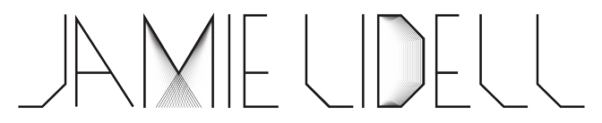

Tour Stuff
March
- 08 London, EN, Heaven Tickets
- 13 Amsterdam, ND, Paradiso Tickets
- 15 Paris, FR, Gaite Lyrique Tickets
- 16 Cologne, DE, Stollwerk Tickets
- 17 Brussells, BE, AB Tickets
- 19 Hamburg, DE, Gruenspan Tickets
- 20 Berlin, DE, Kesselhaus Tickets
- 21 Munich, DE, Ampere Tickets
- 22 Zurich, CH, M4 Music Tickets
- 23 Instanbul, TR, Salon Iksv Tickets
- 28 Las Angeles, CA, Echoplex Tickets
- 29 San Francisco, CA, The Independent Tickets
- 30 Portland, OR, Doug Fir Lounge Tickets
April
- 01 Seattle, WA, Neumos Tickets
- 02 Vancouver, BC, Fortune Sound Club Tickets
- 05 Minneapolis, MN, Fine Line Music Cafe Tickets
- 06 Chicago, IL, Lincoln Hall Tickets
- 07 Grand Rapids, MI, They Pyramid Scheme Tickets
- 08 Toronto, ON, Lee's Palace Tickets
- 10 Burlington, VT, Signal Kitchen Tickets
- 11 Boston, MA, Brighton Music Hall Tickets
- 12 Washington, DC, Rock N Roll Hotel Tickets
- 13 Brooklyn, NY, Music Hall of Williamsburg Tickets
- 14 Philadelphia, PA, Union Transfer Tickets